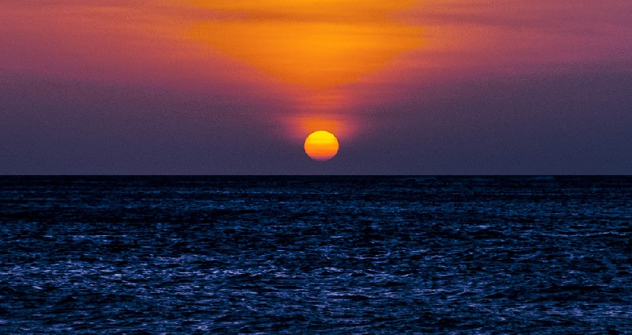
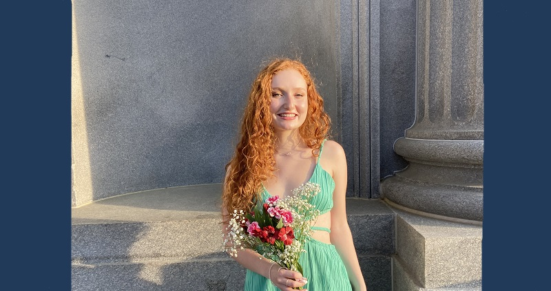
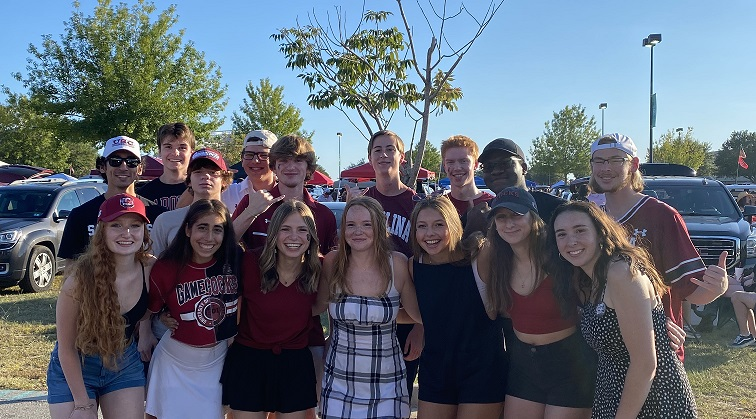
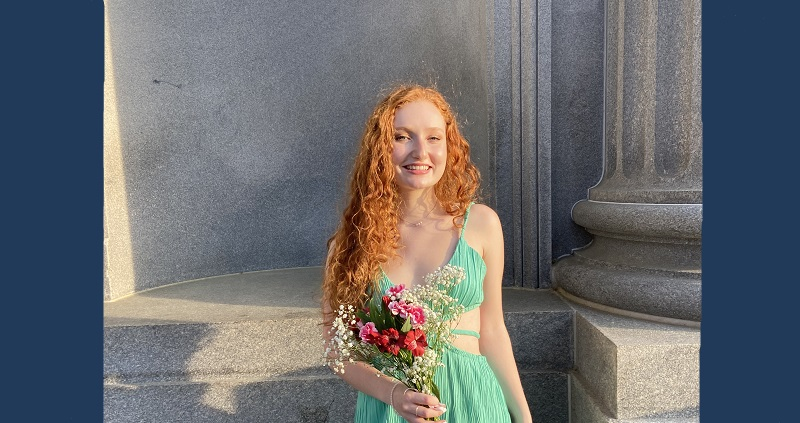
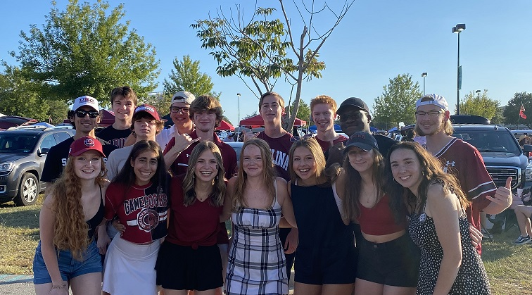

Olivia Tank


 



About Me
My name is Olivia Tank, and I am 18 years old. I am a freshman at the University of South Carolina. I am the middle child in a family of five with my parents, Ed and Andrea, my older sister, Abby, and my younger brother, Eli. We live in Wilmington, North Carolina and have lived here my entire life. Both of my parents are from East Lansing, Michigan, so all of my family members are hardcore Michigan State fans. My siblings are both three years apart from me, and I am super close with them. We grew up dancing—for a while all three of us danced together—, so I would say we're naturally closer than a lot of other siblings. I was a competitive dancer from ages 5 to 18 and definitely miss it a lot.
I am currently a biology major on the pre-med track at UofSC. I am also looking at picking up a second major or minor, most likely in anthropology. I picked the University of South Carolina for a multitude of reasons. I love the climate in Wilmington, so I love Columbia's similar climate, and I think school is a perfect distance from home. I was invited to join the Capstone Scholars program as well, which I have come to really love for introducing me to some of my best friends, encouraging me to try new things, and guiding me through freshman year to have the best experience possible. I also adore college football, so going to an SEC school seemed like a great fit.
See more...
My Future Career Plans
Though biology and anthropology may seem like two very unrelated fields of study, I believe they'll both play a critical role in a future career in medicine. I hope to become a physician one day like my mother, and I believe being the best possible physician means you have to be skilled in both the scientific field and the humanitarian field. If a physician cannot empathize with their patients to best understand them and the factors that could contribute to their ailments and treatment, then I don't think they are the best physician possible.
By pursuing anthropology I hope to broaden my education and knowledge about more cultures other than my own so that I can best serve as many patients as possible in the future. By studying biology, I am getting the background in science necessary to prepare myself for medical school. Other than medical school, I hope to settle down somewhere that I love. Hopefully I can be within a short distance of all my family members at once.
See more...